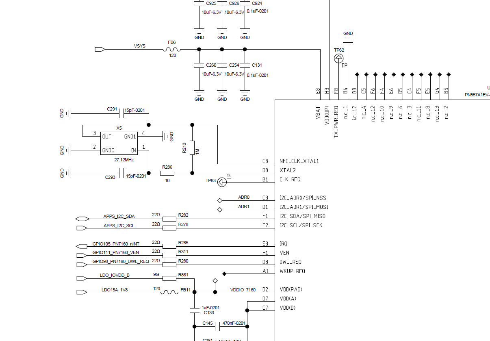

TITLE
NFC PN7160(没有se),驱动初始化,分析
硬件
列出软件配置部分,电源,中断,reset脚等

probe
查看dtb,设置nfc_active,ven脚,power脚等等
这里nfc驱动流程有问题,原有流程是先设置nfc_active,再上电power.
应该是要上power,再设置设置nfc_active, 不过项目没有单独控制nfc的电源脚,直接用vsys供电,所以bug没有体现出来
后续优化一下
&qupv3_se0_i2c {
status = "okay";
/*NFC*/
pn7160: pn7160@28 {
status = "okay";
compatible = "nxp,pn7160";
reg = <0x28>;
nxp,pn7160-irq = <&tlmm 105 0>;
nxp,pn7160-ven = <&tlmm 111 0>;
nxp,pn7160-fw-dwnld = <&tlmm 98 0>;
interrupt-parent = <&tlmm>;
interrupts = <105 0>;
interrupt-names = "nfc_irq";
pinctrl-names = "nfc_active", "nfc_suspend";
pinctrl-0 = <&pax_nfc_int_active &pax_nfc_enable_active &nfc_power_default>;/*&nfc_power_default*/
pinctrl-1 = <&pax_nfc_int_suspend &pax_nfc_enable_suspend>;
nxp,pn7160-power = <&pm2250_gpios 3 GPIO_ACTIVE_HIGH>;
};
};
set_state = pinctrl_lookup_state(pinctrl,"nfc_active");
ret = pinctrl_select_state(pinctrl,set_state);
set_state = pinctrl_lookup_state(pinctrl,"nfc_active");
if (IS_ERR_OR_NULL(set_state)) {
pr_err("nfc pinctrl lookup failed for default state\n");
return -EINVAL;
}
ret = pinctrl_select_state(pinctrl,set_state);
if (ret){
pr_err("%s:nfc Error selecting active state\n");
}
else{
pr_info("OK selecting active state\n");
}
}
/* irq required for i2c based chips only */
if (interface == PLATFORM_IF_I2C || interface == PLATFORM_IF_SPI) {
nfc_gpio->irq = of_get_named_gpio(np, DTS_IRQ_GPIO_STR, 0);
if ((!gpio_is_valid(nfc_gpio->irq))) {
pr_err("%s: irq gpio invalid %d\n", __func__,
nfc_gpio->irq);
return -EINVAL;
}
pr_info("%s: irq %d\n", __func__, nfc_gpio->irq);
}
nfc_gpio->ven = of_get_named_gpio(np, DTS_VEN_GPIO_STR, 0);
if ((!gpio_is_valid(nfc_gpio->ven))) {
pr_err("%s: ven gpio invalid %d\n", __func__, nfc_gpio->ven);
return -EINVAL;
}
/* some products like sn220 does not required fw dwl pin */
nfc_gpio->dwl_req = of_get_named_gpio(np, DTS_FWDN_GPIO_STR, 0);
if ((!gpio_is_valid(nfc_gpio->dwl_req)))
pr_warn("%s: dwl_req gpio invalid %d\n", __func__,nfc_gpio->dwl_req);
nfc_power_gpio = of_get_named_gpio(np, "nxp,pn7160-power", 0);
if ((!gpio_is_valid(nfc_power_gpio))) {
pr_err("%s: ven gpio invalid %d\n", __func__, nfc_power_gpio);
return -EINVAL;
}
ret = gpio_request(nfc_power_gpio, "nfc_power");
pr_info("gpio_request nfc_power_gpio ret:%d \n",ret);
ret = gpio_direction_output(nfc_power_gpio, 1);
pr_info("gpio_direction_output nfc_power_gpio ret:%d \n",ret);
创建nfc设备等
/* Max device count for this driver */
#define DEV_COUNT 1
/* NFC character device name, this will be in /dev/ */
#define NFC_CHAR_DEV_NAME "nxpnfc"
/* i2c device class */
#define CLASS_NAME "nfc"
ret = nfc_misc_register(nfc_dev, &nfc_i2c_dev_fops, DEV_COUNT,
NFC_CHAR_DEV_NAME, CLASS_NAME);
int nfc_misc_register(struct nfc_dev *nfc_dev,
const struct file_operations *nfc_fops, int count,
char *devname, char *classname)
{
ret = alloc_chrdev_region(&nfc_dev->devno, 0, count, devname);
nfc_dev->nfc_class = class_create(THIS_MODULE, classname);
cdev_init(&nfc_dev->c_dev, nfc_fops);
ret = cdev_add(&nfc_dev->c_dev, nfc_dev->devno, count);
nfc_dev->nfc_device = device_create(nfc_dev->nfc_class, NULL,nfc_dev->devno, nfc_dev, devname);
}
A6650:/ # ls -l /sys/class/nfc/nxpnfc/
total 0
-r--r--r-- 1 root root 4096 2023-03-30 20:00 dev
drwxr-xr-x 2 root root 0 2023-03-30 20:00 power
lrwxrwxrwx 1 root root 0 2023-03-30 20:00 subsystem -> ../../../../class/nfc
-rw-r--r-- 1 root root 4096 2023-03-30 20:00 uevent
A6650:/ # ls -l /dev/nxpnfc
crw-rw---- 1 nfc nfc 505, 0 1970-01-02 01:01 /dev/nxpnfc
A6650:/ #
注册irq,设置reset
/* interrupt initializations */
pr_info("%s: requesting IRQ %d\n", __func__, client->irq);
i2c_dev->irq_enabled = true;
ret = request_irq(client->irq, i2c_irq_handler, IRQF_TRIGGER_HIGH,
client->name, nfc_dev);
if (ret) {
pr_err("%s: request_irq failed\n", __func__);
goto err_nfc_misc_unregister;
}
i2c_disable_irq(nfc_dev);
gpio_set_ven(nfc_dev, 1);
gpio_set_ven(nfc_dev, 0);
gpio_set_ven(nfc_dev, 1);
中断来了之后,唤醒工作队列
PN7160给DH回rsp或者ntf的时候,会拉高中断,就是7160有数据需要dh读取的时候拉高中断
猜测是下发读卡指令等,通过iic去读取芯片内容,然后wait_event_interruptible等 芯片中断到来
static irqreturn_t i2c_irq_handler(int irq, void *dev_id)
{
struct nfc_dev *nfc_dev = dev_id;
struct i2c_dev *i2c_dev = &nfc_dev->i2c_dev;
if (device_may_wakeup(&i2c_dev->client->dev))
pm_wakeup_event(&i2c_dev->client->dev, WAKEUP_SRC_TIMEOUT);
i2c_disable_irq(nfc_dev);
wake_up(&nfc_dev->read_wq);
return IRQ_HANDLED;
}
int i2c_read(struct nfc_dev *nfc_dev, char *buf, size_t count, int timeout)
{
int ret;
struct i2c_dev *i2c_dev = &nfc_dev->i2c_dev;
struct platform_gpio *nfc_gpio = &nfc_dev->configs.gpio;
pr_debug("%s: reading %zu bytes.\n", __func__, count);
if (timeout > NCI_CMD_RSP_TIMEOUT_MS)
timeout = NCI_CMD_RSP_TIMEOUT_MS;
if (count > MAX_NCI_BUFFER_SIZE)
count = MAX_NCI_BUFFER_SIZE;
if (!gpio_get_value(nfc_gpio->irq)) {
while (1) {
ret = 0;
if (!i2c_dev->irq_enabled) {
i2c_dev->irq_enabled = true;
enable_irq(i2c_dev->client->irq);
}
if (!gpio_get_value(nfc_gpio->irq)) {
if (timeout) {
ret = wait_event_interruptible_timeout(
nfc_dev->read_wq,
!i2c_dev->irq_enabled,
msecs_to_jiffies(timeout));
if (ret <= 0) {
pr_err("%s: timeout error\n",
__func__);
goto err;
}
} else {
ret = wait_event_interruptible(
nfc_dev->read_wq,
!i2c_dev->irq_enabled);
if (ret) {
pr_err("%s: err wakeup of wq\n",
__func__);
goto err;
}
}
}
}
}
}
nfc状态
/* nfc state flags */
enum nfc_state_flags {
/* nfc in unknown state */
NFC_STATE_UNKNOWN = 0,
/* nfc in download mode */
NFC_STATE_FW_DWL = 0x1,
/* nfc booted in NCI mode */
NFC_STATE_NCI = 0x2,
/* nfc booted in Fw teared mode */
NFC_STATE_FW_TEARED = 0x4,
};
总结
nfc 驱动 还是相对简单,主要是利用iic read等待,中断触发数据.
用户空间通过 /dev/nxpnfc跟驱动做交互
static const struct file_operations nfc_i2c_dev_fops = {
.owner = THIS_MODULE,
.llseek = no_llseek,
.read = nfc_i2c_dev_read,
.write = nfc_i2c_dev_write,
.open = nfc_dev_open,
.release = nfc_dev_close,
.unlocked_ioctl = nfc_dev_ioctl,
};
后续看一下nfc的整体架构,包括上层,hal层等
nfc 配置iic速度,400K,qcom,clk-freq-out = <400000>;
a6650-scuba-iot-idp-overlay_V03_V04.dts,
&qupv3_se0_i2c {
status = "okay";
qcom,clk-freq-out = <400000>;
/*NFC*/
pn7160: pn7160@28 {
status = "okay";
compatible = "nxp,pn7160";
reg = <0x28>;
nxp,pn7160-irq = <&tlmm 105 0>;
nxp,pn7160-ven = <&tlmm 111 0>;
nxp,pn7160-fw-dwnld = <&tlmm 98 0>;
i2c-qcom-geni.c
看了下代码,如果dts没有配置 iic速度,默认就是400K,同一组iic,要配置同一个速度
if (of_property_read_u32(pdev->dev.of_node, "qcom,clk-freq-out",
&gi2c->i2c_rsc.clk_freq_out)) {
gi2c->i2c_rsc.clk_freq_out = KHz(400);
}